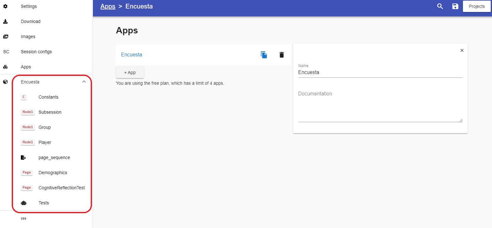
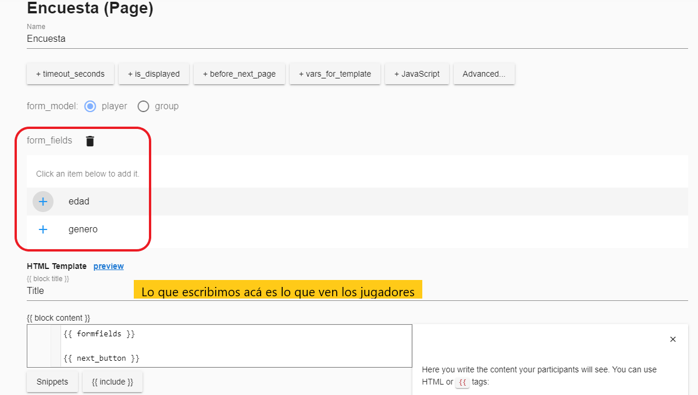

Diseño e Implementación de experimentos en ciencias sociales
Experimentos de Laboratorio
Descargas previas
Instalamos Python: https://www.python.org/ftp/python/3.12.0/python-3.12.0-amd64.exe
Una vez instalado (tal vez se requiere reiniciar la computadora), entrar al PowerShell y escribir siguiente código:
Este código chequea que Python haya quedado instalado efectivamente:
python --versionEl siguiente código instala oTree:
pip3 install -U otreeVamos a definir una carpeta (local, en el escritorio por ejemplo) en la que vamos a trabajar en oTree.
Copiamos el directorio y vamos de nuevo a PowerShell a setear ese directrio:
cd "C:\Users\Lucia Suarez\Desktop\oTree""
Ahí queda oTree instalado
Dos formas de crear una app en oTree:
Programando en Python
En oTree studio:
Hay que loguearse para poder usarlo
Paso 1: iniciar un proyecto

Paso 2: entramos al proyecto y agregamos una App

Aparecen varias opciones pre-cargadas
Hagamos primero una encuesta: elegir “survey”
- Nos aparecerán varios ítems en el menú de la izquierda, asociados a la app survey

Lo que necesitamos es agregar las columnas de la base de datos que se va a generar en el experimento, es decir, qué variables que queremos recolectar.
Vamos a “Player”, y añadimos variables que queremos guardar del participante. Por ejemplo:
Género:
+StringFieldEdad:
+IntegerField

Una vez tenemos esas variables (a nivel de participante) definidas, pasamos a “page_sequence”, estas son las páginas que se van a mostrar, lo que verán los jugadores:

Ahora pasemos a crear una nueva App, la del juego. Elegimos por ejemplo “public_goods_simple”.
En este juego, cada persona integrante de un grupo de personas tiene la opción de contribuir dinero a la provisión de un bien público. Todos se benefician de ese bien público, independientemente de si contribuyen o no.
Lo que queremos es preguntarle a los jugadores cuánto están dispuestos a contribuir para la provisión de ese bien público.
Nuevamente aparecerá en la zona izquierda una pestaña con el nombre de la App y varios ítems pre-cargados.
Constants
Group:
Fields
Function
Player
También están cargadas las pages de la page_sequence, pero mejor traduzcamos al español.
Guardemos el proyecto y probemos
Vamos a Session configs y agregamos las apps en app_sequence
Vamos a Download y descargamos el OTREEZIP en la carpeta de oTree que generamos previamente
Abrimos en la PC el Powershell nuevamente e ingresamos el código siguiente (antes chequear que nuestro directorio sea esa carpeta de oTree):
otree zipserverDebería aparecer esto:
PS C:\Users\Lucia Suarez\Desktop\oTree> otree zipserver Running mi_experimento.otreezip Open your browser to http://localhost:8000/ To quit the server, press Control+C.Copiamos ese link y tenemos el demo de nuestro experimento para probar